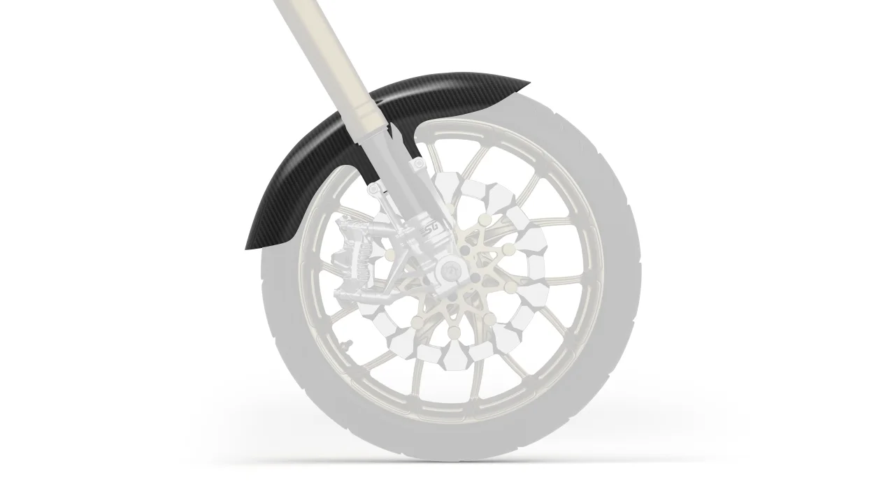
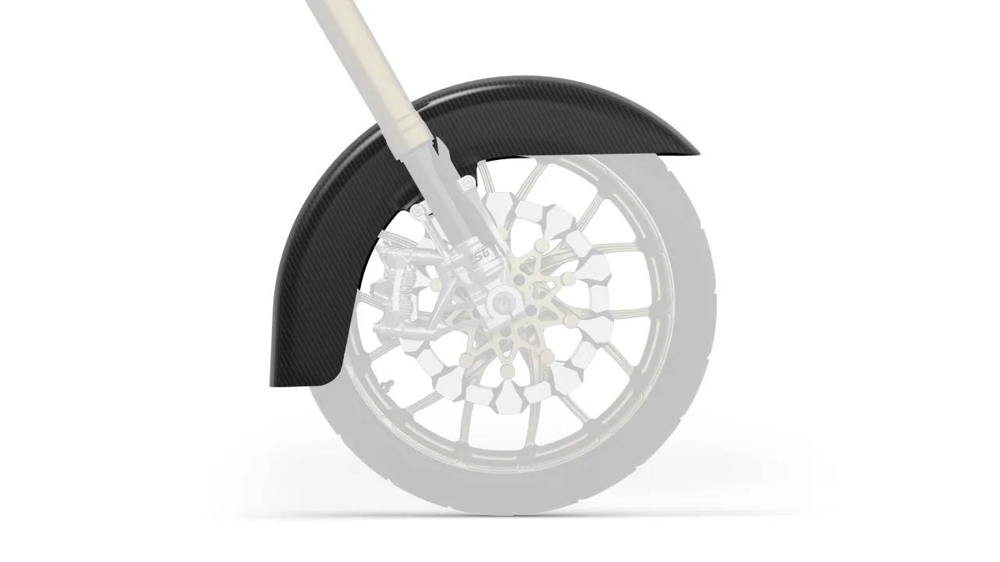

SUPERGEAR DESIGN RESEARCH / 2026
产品交互
灵感实验室
从“看见产品”，到“看懂区别”。
探索真实案例，亲手体验，再找到适合我们的方向。
24参考案例
04交互实验
20扩展方向
EXPERIMENT 01 可拖动体验


‹ ›
CVODB同一视角，不同轮廓。拖动分割线，看清变化
01 / REFERENCE LIBRARY
交互，不止一种答案。
先看感兴趣的方式，再展开它背后的设计逻辑。
24 个案例点击卡片展开 · 收藏保存在当前浏览器
没有找到匹配案例
关于这份调研
精选参考，不是全网排名。24 个案例均有独立配图：23 张官网或制作方页面截图，1 张官方产品图。图片类型、来源与核对范围见详情，截图不等于完整流程实测。调研日期：2026.10.14。
02 / INTERACTION PLAYGROUND
少读一点，直接上手。
用小实验理解交互。以下是本页制作的示意，并非品牌网站复刻。
‹ ›
CVODBSGCARBON STUDY
装配顺序概念示意 · 非工程安装指导
示例规则 / 非真实适配数据
SGMY GARAGE
03 / FROM INSPIRATION TO PRODUCT
选值得做的，不是全都做。
20 个方向，按素材与投入分阶段。点击查看具体操作和前提。